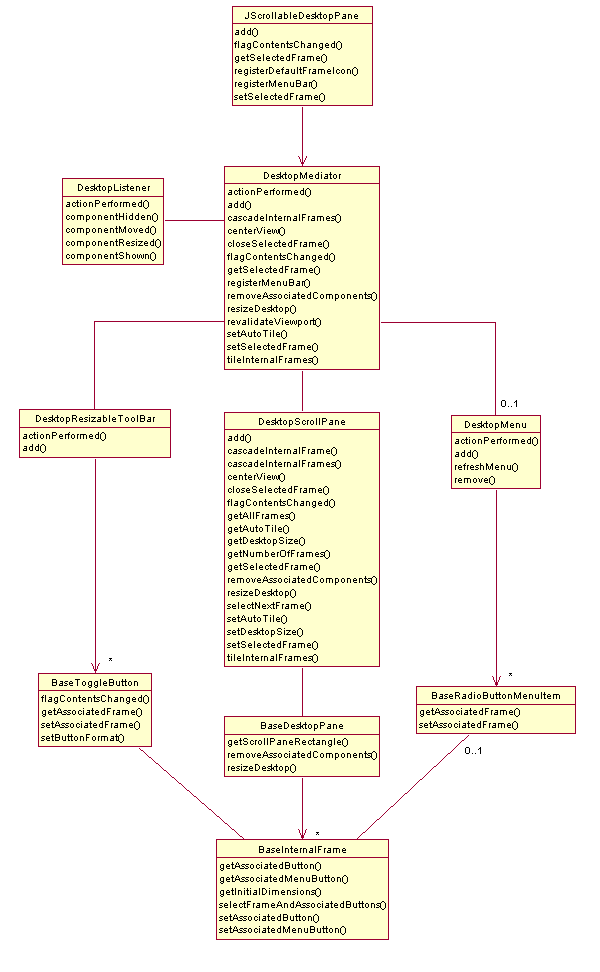

|
JScrollableDesktopPane v1.01 | |||||||
| PREV PACKAGE NEXT PACKAGE | FRAMES NO FRAMES | |||||||
| Interface Summary | |
| DesktopConstants | This interface provides a set of reusable constants for use by other classes in the system. |
| FrameAccessorInterface | This interface exposes the accessor and mutator (getter and setter) methods required to get and set the internal frame associated with an implementing class. |
| Class Summary | |
| BaseDesktopManager | This class provides a custom desktop manager for
BaseDesktopPane. |
| BaseDesktopPane | This class provides a custom desktop pane. |
| BaseInternalFrame | This class provides a custom internal frame. |
| BaseMenuItem | This class creates a generic base menu item. |
| BaseRadioButtonMenuItem | This class creates a base radio button menu item. |
| BaseToggleButton | This class creates a base toggle button. |
| ConstructWindowMenu | This class constructs the "Window" menu items for use by
DesktopMenu. |
| DesktopListener | This class provides common Component and Action Listeners for other objects in the system. |
| DesktopMediator | This class coordinates state changes between other classes in the system. |
| DesktopMenu | This class provides the optional "Window" menu for the scrollable desktop. |
| DesktopResizableToolBar | This class provides the resizable toolbar for the scrollable desktop. |
| DesktopScrollPane | This class provides the scrollpane that contains the virtual desktop. |
| EmptyDesktopIconUI | This class provides an empty DesktopIconUI for
BaseDesktopPane. |
| FramePositioning | This class provides internal frame positioning methods for use by
DesktopScrollPane. |
| JScrollableDesktopPane | The main scrollable desktop class. |
| ResizableToolBar | Generic self-contained resizable toolbar class. |
| UML Class Diagram | |
|  | |
|
JScrollableDesktopPane v1.01 | |||||||
| PREV PACKAGE NEXT PACKAGE | FRAMES NO FRAMES | |||||||